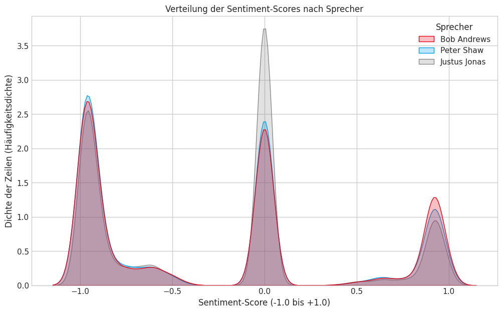

Wir wollten herausfinden, wie sich unsere Kindheitshelden aus Sicht der Datenanalyse verändert haben – von Justus' analytischem Denken bis zu Peters emotionalem Mitfiebern.
„Höchst interessant … wirklich höchst interessant.“, würde Justus Jonas sagen. Die drei ??? stehen diesmal selbst im Mittelpunkt einer geheimnisvollen Beobachtung. Was bei dieser Datenanalyse ans Licht kam, ist ein Rätsel, das wir heute lüften werden.
Historischer Überblick
Seit 1979 ermitteln die drei ??? nun schon – und begeistern seither Generationen von Fans. Ob Kinder, die mit klopfendem Herzen den neuesten Fällen folgen, oder Erwachsene, die nostalgisch in Erinnerungen an ihre eigene Kindheit schwelgen: Die Hörspielreihe hat sich über Jahrzehnte hinweg einen festen Platz im Herzen ihrer Zuhörer gesichert.

Die Produktion der Hörspiele schwankte über die Jahrzehnte stark: Anfangsjahre mit bis zu 12 neuen Abenteuern pro Jahr, dann ruhigere Phasen, später wieder ein stabiler Rhythmus von 5–8 Folgen jährlich.
Charakterentwicklung
Schon am Anfang unserer Analyse fällt auf: ein Charakter redet mehr als alle anderen. Justus Jonas, der nach der Verunglückung seiner Eltern bei seiner Tante Mathilda und Onkel Titus beim Gebrauchtwarencenter T. Jonas aufgewachsen ist, gilt als Genie und allwissend, was er immer wieder in Monologen und der Aufklärung des gerade anliegenden Falls beweist. Ebenjene Ausführungen bilden eine feste Grundlage, die ihm den ersten Platz bezüglich Anteil an generellen Dialogmöglichkeiten einbringt. Dadurch, dass Justus sich sonst auch nichts entgehen lässt, bietet die nachfolgende Grafik einen tieferen Einblick in die Materie. Mit mehr als 25.000 Wortmeldungen werden die vorangehenden Anmerkungen nur noch verdeutlicht. Während sich Peter und Bob eher zurückhalten und sich mit knappen 20.000 Meldungen um Platz zwei und drei streiten, glänzt Justus an Sprechzeit.
Um diese Feststellung noch an Granularität zu übertreffen, belegt das Liniendiagramm, dass Justus Jonas der Favorit der Autor*innen und Hörspieladapteur*innen ist. Ungeschlagen brüstet sich der erste Detektiv mit konstanter Übermacht und lässt die anderen beiden Detektive im Schatten stehen. Bis auf die ein oder andere Ausnahme, bei welcher Peter und vor allem Bob ihren Kollegen an Sprech-Gelegenheiten übertreffen, macht Justus seinem Titel als erster Detektiv alle Ehre. Es gibt hier tatsächlich auch einige markante Fluktuationen, bei denen alle drei neue Höhen erreichen. Diese Ausschläge sind unter anderem der Folge 100 “Toteninsel”, 125 “Feuermond” und 150 “Geisterbucht” verschuldet. Alle drei Hörspielfolgen fallen in die Kategorie Jubiläumsfolge und stechen dadurch heraus, dass sie Dreiteiler sind und dementsprechend viel Zeit in Anspruch nehmen. Wenn man sich darauf einlässt, bekommt man eine Folge im Ausmaß von drei normalen Folgen. Detailliert genug für Justus Jonas!
Die emotionale Verteilung der Dialoge zeigt, dass Justus analytisch bleibt, Peter emotional reagiert und Bob reflektiert.
Kult-Ausrufe & Running Gags
Bekannte Phrasen: „Darf ich Ihnen unsere Karte überreichen?“ (44 Mal), „Kirschkuchen“ (11 Mal), Peters „Den schnapp ich mir!“ (15 Mal).

Top Nebencharaktere & Geschlechterverteilung
Drei Jungs aus Rocky Beach gründen ein erfolgreiches Detektivtrio, haben einen persönlichen Chauffeur namens Morton und können (fast) immer auf die Kollegen vom Polizeipräsidium zählen. Inspektor Cotta und dessen Vorgänger Kommissar Reynolds rümpfen zwar bei den nur wenig vollständigen Ausführungen des ersten Detektivs die Nasen, doch sind sie ein verlässlicher Puffer. Wenn mann an den Erzfeind Skinny Norris denkt, fühlt sich frau schon etwas ausgeschlossen. Die folgende Abbildung zeigt den Verlauf der Anzahl an männlichen und weiblichen Sprecher:innen über alle Hörspielfolgen der Reihe. Es ist deutlich zu erkennen, dass die Anzahl männlicher Sprecher in sämtlichen Episoden die der weiblichen übersteigt. Auffällig ist weiters der starke Ausschlag bei Folge 150, der auf die Sonderfolge “Die drei ??? und die Geisterbucht” zurückzuführen ist. Diese wurde als dreiteilige Episode veröffentlicht und enthält dementsprechend eine außergewöhnlich hohe Anzahl Rollen insgesamt. Grundsätzlich zeigt das Diagramm auch, dass das Verhältnis der Geschlechter über den gesamten Verlauf hinweg relativ konstant ist, mit einem klaren Überhang männlicher Sprecher.

Um diese Thematik noch weiter aufschlüsseln zu können, bietet sich ein Blick auf folgende Tabelle, in welcher die Randgrößen des Liniendiagramms näher beschrieben sind. Es wird hier noch einmal verdeutlicht, dass männliche Sprecher pro Folge in allen Punkten überwiegen. Der Durchschnitt von 2,45 bei weiblichen Sprechern liegt weit unter dem Schnitt der männlichen Sprecher. Die Differenz hier verdeutlicht die ungleiche Geschlechterverteilung. Während männliche Sprecher in keiner Folge unter vier auftreten, fehlen weibliche Stimmen in einzelnen Folgen gänzlich. Dieses Minimum kommt vor allem davon, dass das Studio unter der Leitung Heikedine Körtings nicht auf die drei Protagonisten verzichten kann. “Die zwei Fragezeichen” klingt einfach nicht nach unserem bekannt-beliebten Trio. Währenddessen spiegelt das Maximum bei den Sprechern den Ausschlag im Liniendiagramm wider. Das Diagramm wie auch die Tabelle beschreiben vor allem, die primären Sprecher*innen, die häufiger als einmal in der entsprechenden Folge auftreten.
| Geschlecht | Minimum | Mittelwert | Maximum |
|---|---|---|---|
| Männlich | 4.0 | 9.16 | 22.0 |
| Weiblich | 0.0 | 2.45 | 7.0 |
Sentiment
Justus Jonas wird oft als besonders analytisches Mitglied der drei Detektive gesehen. Die Grafik bestätigt diese Wahrnehmung: Schaut man sich die emotionale Färbung der Dialoge an, ist Justus Jonas klar der kühle Kopf des Team
Die Abbildung zeigt, wie sich die Sätze der drei Detektive auf einer Gefühlsskala von sehr negativ (links) über neutral (Mitte) bis sehr positiv (rechts) verteilen. Was sofort ins Auge sticht: Die graue Linie von Justus türmt sich in der Mitte, bei den neutralen Sätzen, regelrecht auf. Er ist der Mann für die Fakten, der Beobachter, der erst einmal alles sachlich sammelt, ganz nach seinem Motto: „Erst denken, dann handeln.“
Ganz anders Peter (blau) und Bob (rot). Ihre Kurven sind in der neutralen Mitte deutlich flacher. Sie reagieren oft emotionaler auf das Geschehen. Natürlich erleben alle drei ihre Hochs und Tiefs, die gemeinsamen Ausschläge ganz links (in Schockmomenten) und ganz rechts (bei der Lösung des Falls) zeigen das deutlich. Doch im direkten Vergleich wird klar: Während Justus das sachliche Zentrum bildet, sind Peter und Bob diejenigen, die stärker mitfiebern, zweifeln oder jubeln. Die Daten bestätigen hier wunderbar die klassische Rollenverteilung, die Fans seit Jahrzehnten kennen und lieben.
Word Clouds der Hauptcharaktere
Justus' häufigstes Wort: „Kollegen“, Peter und Bob dominieren mit Lauten wie „Na“, „Hm“, „Ah“ – perfekt passend zu ihren Charakterzügen.
Top Positive & Negative Sätze
Doch was passiert, wenn die Emotionen hochkochen? Ein Blick auf die Sätze mit den extremsten positiven und negativen Werten zeigt, wer wann aus sich herauskommt.
Im positiven Bereich herrscht purer Teamgeist vor. Einer der besten Sätze von Justus ist ein direktes und fast schon euphorisches Lob an seinen Kollegen: "Ja, und den Rest hat Bob erledigt. DAS war sensationell!" Und auch Bobs "Phantastisch!" über einen gelungenen Plan fängt die Begeisterung eines gelösten Rätsels perfekt ein.
Wirklich aufschlussreich sind jedoch die negativen Extreme. Hier wird Peters Rolle als emotionaler Anker und moralischer Kompass des Teams unübersehbar.
Während Justus' stärkste negative Sätze Gefahr beschreiben ("Die hätten mich vermöbelt...") oder eine Idee als "Lächerlich!" abtun, explodiert Peter förmlich, wenn er mit Ungerechtigkeit konfrontiert wird. Er beschwert sich nicht nur über einen "unfreundlichen Menschen", er hält auch die finale Brandrede, wenn der Täter moralisch versagt hat. Kein anderer Detektiv konfrontiert einen Schuldigen mit einer solchen Wucht wie Peter:
"Das war es also: pure Gier". [...] "Sie sind wirklich das mieseste Stück, das uns je begegnet ist!"
Die Daten bestätigen hier eindrucksvoll: Justus mag der kühle Analytiker sein, aber Peter ist das moralische Herz der Truppe, das im richtigen Moment für die klare Kante sorgt.